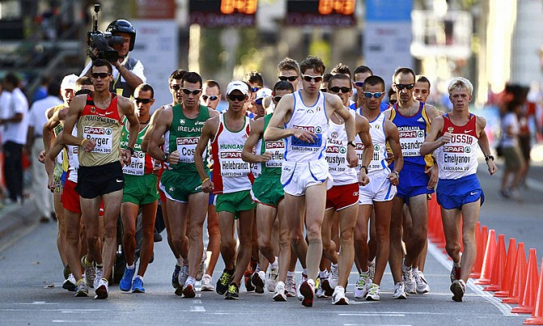

La marcia altro non è che la camminata agonistica spinta alla massima velocità possibile, senza infrangere la regola principale che obbliga a mantenere sempre, allo sguardo dell’occhio umano, almeno un piede a contatto con il terreno e l’arto di appoggio completamente esteso. In caso contrario si dovrebbe parlare di corsa.
Le gare olimpiche di marcia sono di 20km e 50km per gli uomini e di 20km per le donne, si svolgono su strada, a parte il finale (circa 100m) che viene svolto sulla pista di atletica.
La marcia deriva dalla camminata, una successione di passi (senza fase di volo a differenza della corsa). Infatti il gesto tecnico non è altro che la camminata agonistica spinta alla massima velocità possibile: una progressione di passi eseguiti in modo che il marciatore sia sempre a contatto con il terreno, senza che si verifichi una perdita di contatto evidente, all’occhio umano.
